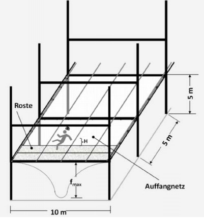
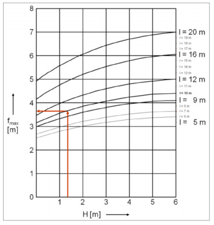
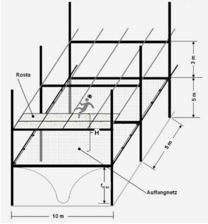
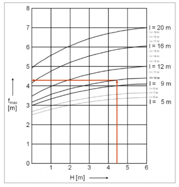

Bühnenmaße:
| • | Breite | 10,0 m |
| • | Feldlänge | 5,0 m |
| • | Freiraum unter d. Netz | 5,0 m |
Schutznetz nach DIN EN 1263-1:2015-03
Typ S, Maschengröße M10 D (rhombisch)
Das Netz wird über die Breite von 10 m gespannt.
Netzgröße 10 m x 10 m
Absturzhöhe H ins Netz:
Trägerhöhe h + Netzdurchhang f0
| Trägerhöhe h: | |
| Randträger | = 180 mm |
| Pfettenhöhe | = 160 mm |
| Trägerhöhe h | = 340 mm |

| Netzdurchhang f0: |
| f0 ≤ 0,1 x l |
| f0 = 0,1 x 10 m |
| f0 = 1,0 m |
| H = h + f0 |
| H = 340 mm + 1,0 m |
| H = 1,34 m |
Aus dem Diagramm (DIN EN 1263-2:2015-03) ergibt sich eine max. Netzverformung
fmax= 3,7 m
fmax < Freiraum unter dem Netz
(3,7 m < 5,0 m)
Ein Einnetzen der Bühne ist möglich.

Bühnenmaße:
| • | Breite | 10,0 m |
| • | Feldlänge | 5,0 m |
| • | Freiraum unter d. Netz | 5,0 m |
Schutznetz nach DIN EN 1263-1:2015-03
Typ S, Maschengröße M10 D (rhombisch)
Das Netz wird über die Breite von 10 m gespannt.
Netzgröße 10 m x 10 m
Absturzhöhe H ins Netz:
3,0 m + Trägerhöhe h + Netzdurchhang f0
Trägerhöhe h = 340 mm

| Netzdurchhang f0: |
| f0 ≤ 0,1 x l |
| f0 = 0,1 x 10 m |
| f0 = 1,0 m |
| H = 3,0 m + h + f0 |
| H = 3,0 m + 340 mm + 1,0 m |
| H = 4,34 m |
Aus dem Diagramm (DIN EN 1263-2:2015-03) ergibt sich eine max. Netzverformung
fmax= 4,3 m
fmax < Freiraum unter dem Netz
(4,3 m < 5,0 m)
Ein Einnetzen der Bühne ist möglich.